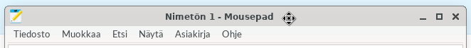
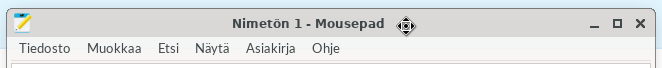
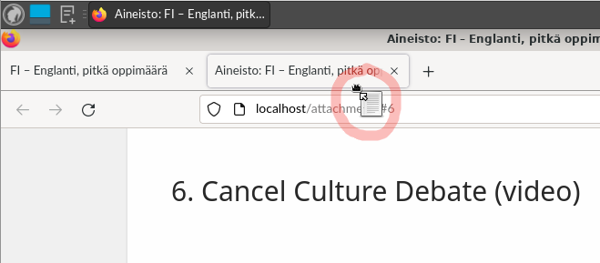
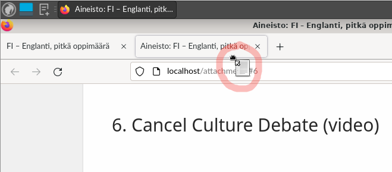
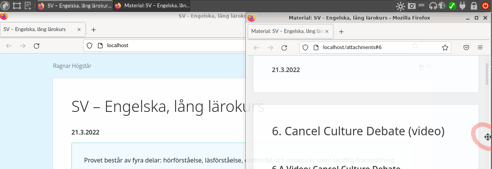
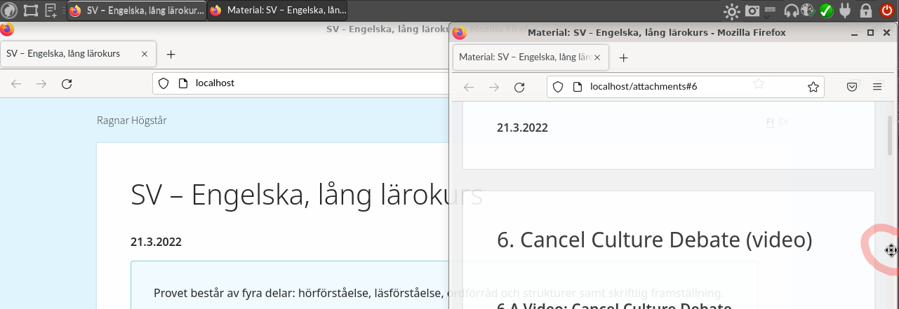
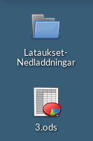
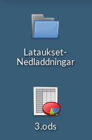

Nämä ainekohtaiset ja yleiset ohjeet löytää verkosta osoitteesta cheat.abitti.fi.
Dessa ämnesspecifika och allmänna instruktioner finns på nätet på adressen cheat.abitti.fi.
Käynnistä koneesi USB-muistilta.
Starta datorn från USB-minnet.
Koneen käynnistyessä näytölle tulee äänitesti. Liitä kuulokkeet tietokoneeseen ja kokeile, saatko äänet kuulumaan.
Ett ljudtest visas på skärmen när datorn startar. Anslut hörlurarna till datorn och testa om du kan höra ljudet.
Näytön kirkkautta voit säätää klikkaamalla näytön oikean ylänurkan aurinkokuvakkeesta: 
Du kan justera skärmens ljusstyrka genom att klicka på solikonen uppe till höger på skärmen:
Säädä koejärjestelmän ulkoasu sopivaksi:
Justera provsystemets layout så att den passar dig:


Liitä tietokone koeverkkoon
Anslut datorn till provnätet


 

 



 



 



| Kopioi Kopiera |
 +
+

|
| Liitä Klistra in |
+

|
| Leikkaa Klipp ut |
+

|
| Valitse kaikki Välj alla |
+

|
| Palauta Ångra |
+

|
| Tee uudelleen Gör om |
+

|
Aineistot avautuvat omaan välilehteensä. Jos haluat asettaa koesivun ja aineistosivun rinnakkain, voit erottaa aineistovälilehden omaksi ikkunakseen tarttumalla välilehteen ja raahamalla sen alaspäin. Ikkunan pystyy asettamaan puolikkaalle näytölle raahaamalla ikkunan ruudun oikeaan tai vasempaan laitaan.
Materialet öppnas i en separat flik. Om du vill placera provsidan och materialsidan sida vid sida på skärmen kan du avskilja materialfliken till ett separat fönster genom att ta tag i fliken och dra den nedåt. Fönstret kan placeras på halva skärmen genom att dra fönstret till den högra eller vänstra kanten av skärmen.
Videossa ei ole ääntä.
Videon saknar ljud.
Voit palauttaa vastauskentän aiemmin tekemäsi luonnoksen seuraavien ohjeiden mukaisesti. Kokeen valvoja saa avustaa sinua toiminnallisuuden käytössä, mutta ei osallistua palautettavan sisällön valintaan.
Du kan återställa ett tidigare utkast till svar i svarsfältet enligt följande instruktioner. Provets övervakare får hjälpa dig med att använda funktionaliteten, men får inte ta del i valet av innehållet som återställs.


Avaa kuvakaappaustyökalu napsauttamalla näytön ylälaidan kamerakuvaketta. Rajaa kuvakaappaukseksi haluamasi alue näytöltä. Palaa kokeen vastausikkunaan. Liitä kuvakaappaus vastauskenttään napsauttamalla vastauskenttää hiiren oikeaa painiketta ja valitsemalla Liitä, tai vaihtoehtoisesti näppäinkomennolla Ctrl+V vastauskentässä.
Öppna skärmdumpsverktyp genom att klicka på kameraikonen i skärmens övre kant. Markera det område du vill kopiera på skärmen. Återvänd till provets svarsfält. Bifoga skärmdumpen till svarsfältet genom att högerklicka på svarsfältet och välja Klistra in, eller alternativt med tangentkommandot Ctrl+V i svarsfältet.
Videossa ei ole ääntä.
Videon saknar ljud.
Voit työstää vastaustasi oheisohjelmassa, jolloin tiedoston tallentamisesta tulee huolehtia itse. Tallentaminen tapahtuu yleensä disketti-ikonia napsauttamalla ja antamalla tiedostolle nimi. Ohjelmasta riippuen tallentaminen saattaa tapahtua myös esimerkiksi Tiedosto-valikon kautta. Voit yleensä käyttää myös näppäinkomentoa Ctrl+S. Tallenna usein, jotta tietoa ei häviä. Muista kuitenkin, että vastauskenttiin pystyy syöttämään vastaukseksi vain tekstiä tai kuvakaappauksia, ei tiedostoja. Oheisohjelmassa laadittu vastaus täytyy siis kopioida vastauskenttään tai ottaa siitä kuvakaappaus ja liittää se vastauskenttään.
Du kan bearbeta ditt svar i ett bifogat program. I detta fall måste du spara filen själv. Du sparar i de flesta fallen filen genom att klicka på diskettikonen och ge filen ett namn. Beroende på program kan filen också sparas via till exempel menyn Arkiv. Du kan oftast använda också tangentkommandot Ctrl+S. Spara ofta så att information inte försvinner. Kom dock ihåg att man kan mata in endast text eller skärmdumpar i svarsfälten, inte filer. Ett svar som bearbetats i ett bifogat program måste således kopieras och klistras in till svarsfältet som text eller som en skärmdump.
Videossa ei ole ääntä.
Videon saknar ljud.
Näppäimistöasettelu on oletuksena suomenkielinen. Voit vaihtaa näppäimistöasettelua klikkaamalla yläpalkin näppäimistösymbolia ja valitsemalla haluamasi näppäimistöasettelun. Näppäimistökartan kuvan saat näkyviin sovellusvalikosta.
Standardalternativet för tangentbordslayouten är finska. Du kan byta tangentbordslayouten genom att klicka på tangentbordssymbolen i den övre balken och välja den önskade tangentbordslayouten. Du hittar bilder på tangentbordslayouten i programmenyn.
Käytettävissä ovat seuraavat näppäimistöasettelut:
Följande tangentbordslayouter finns till förfogande: